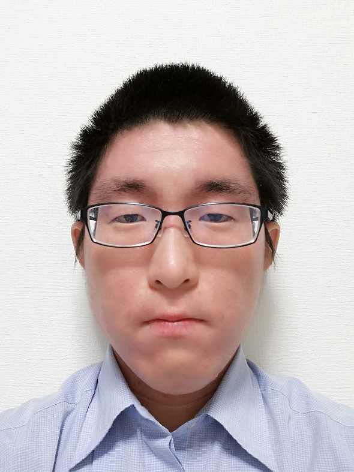

Daisuke Miki
三木 大輔
Postdoctoral Scholar
JSPS Overseas Research Fellowship
California Institute of Technology
The Division of Physics, Mathematics and Astronomy
Research interests: Quantum gravity, Quantum measurement, Optomechanics
dmiki_at_caltech.edu

NEWS
Publication
Gravity-induced entanglement assisted by an additional interaction using magic angle calibration
Publication
A Causal Schrödinger-Newton Theory that Conserves Energy and Momentum
PRESS RELEASE
· Kyushu University · Japanese